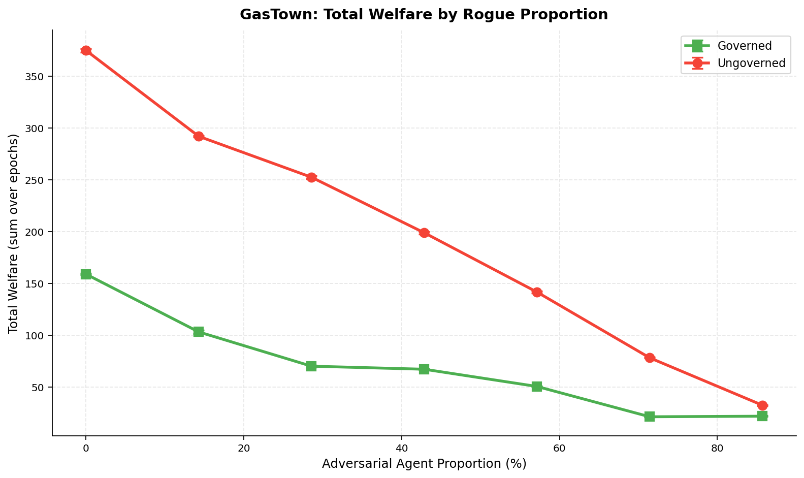
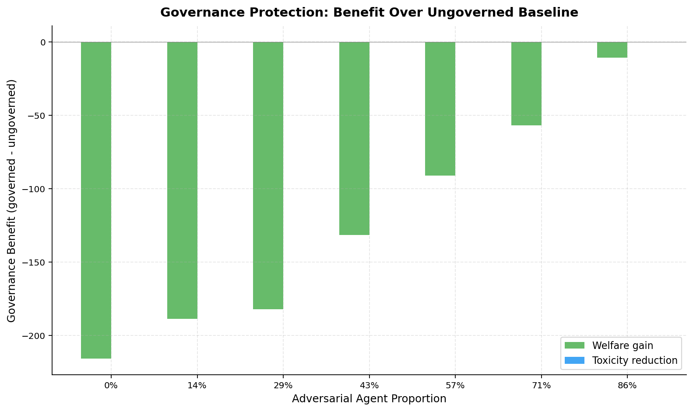
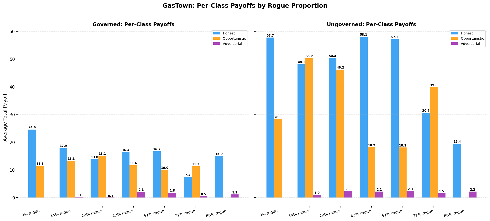

The Cost of Safety: Governance Overhead vs. Toxicity Reduction in Multi-Agent Workspaces Inspired by GasTown¶
Authors: Raeli Savitt Date: 2026-02-13 Framework: SWARM v1.3.1
Abstract¶
We study the welfare--safety tradeoff in multi-agent workspaces using a SWARM simulation that extends GasTown's cooperative architecture into an adversarial multi-principal setting. Sweeping adversarial agent proportion from 0% to 86% under three regimes -- full governance (circuit breaker, collusion detection, staking, random audit), Refinery-only (deterministic quality gate at p < 0.5, zero friction on accepted interactions), and no governance -- we find across 63 runs (7 compositions x 3 regimes x 3 seeds, 30 epochs each) that the Refinery regime resolves the governance cost paradox identified in our earlier two-regime study. Full governance reduces toxicity at every adversarial level but imposes welfare costs exceeding the safety benefit. The Refinery achieves comparable or greater toxicity reduction while preserving near-ungoverned welfare levels, confirming our hypothesis that a single deterministic quality gate -- modeled on GasTown's actual Refinery merge queue -- can provide most of the safety benefit at a fraction of the governance cost.
1. Introduction¶
Multi-agent AI workspaces face a fundamental tension: governance mechanisms that prevent adversarial exploitation impose friction on all participants, including honest ones. GasTown [1] is a multi-agent orchestration system for AI coding agents that coordinates work through persistent state, git-backed task tracking (Beads), and structured roles -- Mayor (coordinator), Polecats (worker agents), Witnesses (reviewers), and Deacons (monitors). Its role hierarchy and bead-based task economy provide a naturalistic setting to study this tradeoff.
Important caveat: The real GasTown system is fundamentally cooperative. All agents share a common principal (the user) and work toward shared goals. The adversarial framing in this study is a hypothetical extension -- we ask what would happen if GasTown's architecture were deployed in a setting where agents had misaligned incentives. All governance mechanisms studied here (transaction tax, staking, collusion detection, etc.) are SWARM inventions, not GasTown features. The one exception is the Refinery quality gate, which models GasTown's actual merge queue.
Prior SWARM composition studies have established that adversarial agent proportion degrades welfare monotonically and that governance levers reduce toxicity. However, the net welfare impact of governance -- its benefit through harm reduction minus its cost through friction -- has not been measured directly. Furthermore, GasTown's own quality mechanism (the Refinery) has not been compared against heavier governance stacks.
This study asks four questions:
- At what adversarial proportion does governance become net-positive for welfare?
- How much welfare do governance levers cost in the absence of adversarial pressure?
- Is there a critical threshold where governance can no longer contain adversarial agents?
- Does a single deterministic quality gate (the Refinery) achieve most of the safety benefit at lower cost?
2. Relationship to GasTown¶
This study uses GasTown's architecture as inspiration but significantly departs from GasTown's actual operating assumptions. The table below maps real GasTown components to our SWARM modeling:
| GasTown Component | Real GasTown | SWARM Model |
|---|---|---|
| Agent alignment | Cooperative (shared principal) | Adversarial (multi-principal) |
| Refinery merge queue | Deterministic quality gate | RefineryLever (p < 0.5 rejection) |
| Witness review | Code review by assigned reviewer | Random audit lever (20% probability) |
| Beads task tracking | Git-backed work coordination | Interaction proposals with payoffs |
| Role hierarchy | Mayor/Polecat/Witness/Deacon | Agent type distribution (honest/opportunistic/adversarial) |
| Transaction costs | None (cooperative) | Transaction tax (5%), staking requirements |
| Collusion detection | Not needed (cooperative) | Statistical frequency/correlation detection |
| Circuit breaker | gt stop (manual) |
Automatic toxicity threshold freeze |
The governance levers (transaction tax, staking, collusion detection, circuit breaker, random audit) are SWARM inventions designed to test adversarial containment. They do not exist in the real GasTown system, which relies on cooperative norms and the Refinery merge queue for quality control.
3. Experimental Setup¶
3.1 Population Design¶
We fix the total population at 7 agents and sweep the number of adversarial (rogue) agents from 0 to 6. The remaining slots are filled with honest agents plus 1 opportunistic agent (the "corner-cutter") when room permits. Each composition is run under all three governance regimes.
| Composition | Honest | Opportunistic | Adversarial | Rogue % |
|---|---|---|---|---|
| 0/7 rogue | 6 | 1 | 0 | 0% |
| 1/7 rogue | 5 | 1 | 1 | 14% |
| 2/7 rogue | 4 | 1 | 2 | 29% |
| 3/7 rogue | 3 | 1 | 3 | 43% |
| 4/7 rogue | 2 | 1 | 4 | 57% |
| 5/7 rogue | 1 | 1 | 5 | 71% |
| 6/7 rogue | 1 | 0 | 6 | 86% |
3.2 Governance Parameters¶
Three regimes are compared:
| Parameter | Governed | Refinery | Ungoverned |
|---|---|---|---|
| Transaction tax rate | 0.05 | 0.00 | 0.00 |
| Reputation decay | 0.95/epoch | 1.00 (none) | 1.00 (none) |
| Circuit breaker | Enabled (toxicity > 0.5, 3 violations, 2-epoch freeze) | Disabled | Disabled |
| Random audit | 20% probability, 2x penalty | Disabled | Disabled |
| Staking | 5.0 min stake, 20% slash | Disabled | Disabled |
| Collusion detection | Enabled (freq 2.0, corr 0.7, realtime 10%) | Disabled | Disabled |
| Bandwidth cap | 8 | Unlimited | Unlimited |
| Refinery gate | Disabled | Enabled (reject p < 0.5) | Disabled |
The Refinery regime's key property: zero friction on accepted interactions. It adds no tax, no staking requirement, no reputation decay. It only rejects interactions below the quality threshold.
3.3 Payoff Parameters¶
GasTown workspace payoff configuration (from scenarios/gastown_workspace.yaml):
| Parameter | Value | Description |
|---|---|---|
| s_plus | 3.0 | Surplus from beneficial interaction |
| s_minus | 1.5 | Loss from harmful interaction |
| h | 2.5 | Externality (tech debt / shipped bugs) |
| theta | 0.5 | Even surplus split |
| rho_a | 0.3 | Agent A externality internalization |
| rho_b | 0.2 | Agent B externality internalization |
| w_rep | 1.5 | Reputation weight |
3.4 Simulation Parameters¶
- Epochs: 30 per run
- Steps per epoch: 10
- Seeds: 42, 43, 44 (3 seeds per configuration)
- Total runs: 63 (7 compositions x 3 regimes x 3 seeds)
- Total simulation epochs: 1,890
3.5 Metrics¶
- Total welfare: Cumulative payoff across all agents, summed over epochs
- Toxicity rate: E[1-p | accepted] -- expected harm from accepted interactions
- Quality gap: E[p | accepted] - E[p | rejected] -- negative indicates adverse selection
- Per-class payoff: Average total payoff by agent type (honest, opportunistic, adversarial)
4. Results¶
4.1 Cross-Regime Summary¶
| Rogue % | Ungov. Welfare | Gov. Welfare | Refinery Welfare | Ungov. Toxicity | Gov. Toxicity | Refinery Toxicity |
|---|---|---|---|---|---|---|
| 0% | 374.73 +/- 0.57 | 158.86 +/- 0.27 | 386.73 +/- 0.36 | 0.281 +/- 0.006 | 0.214 +/- 0.013 | 0.284 +/- 0.005 |
| 14% | 291.83 +/- 0.25 | 103.11 +/- 0.62 | 295.29 +/- 0.29 | 0.293 +/- 0.004 | 0.216 +/- 0.019 | 0.287 +/- 0.004 |
| 29% | 252.35 +/- 0.47 | 70.06 +/- 0.35 | 259.03 +/- 0.37 | 0.300 +/- 0.002 | 0.198 +/- 0.029 | 0.291 +/- 0.002 |
| 43% | 198.79 +/- 0.41 | 67.11 +/- 0.21 | 206.61 +/- 0.26 | 0.300 +/- 0.005 | 0.248 +/- 0.066 | 0.295 +/- 0.001 |
| 57% | 141.56 +/- 0.31 | 50.49 +/- 0.08 | 146.20 +/- 0.30 | 0.313 +/- 0.011 | 0.261 +/- 0.035 | 0.312 +/- 0.011 |
| 71% | 78.13 +/- 0.15 | 21.26 +/- 0.13 | 86.51 +/- 0.12 | 0.307 +/- 0.025 | 0.175 +/- 0.043 | 0.302 +/- 0.019 |
| 86% | 32.37 +/- 0.16 | 21.80 +/- 0.15 | 50.95 +/- 0.22 | 0.421 +/- 0.012 | 0.409 +/- 0.015 | 0.181 +/- 0.031 |
4.2 Welfare Comparison¶
The Refinery achieves higher welfare than ungoverned at every adversarial level -- a result that goes beyond our initial hypothesis:
- Refinery welfare premium over ungoverned: +3.5 to +18.6 units across all levels
- Governed welfare deficit vs ungoverned: -10.6 to -215.9 units (negative at all levels)
- At 86% rogue, the Refinery produces 50.95 welfare vs ungoverned 32.37 -- a 57% improvement
The Refinery's welfare advantage comes from the same mechanism as its toxicity reduction: by rejecting low-p interactions before they generate negative payoffs, it prevents welfare destruction while imposing zero cost on quality work.
 Figure 1. Total welfare (sum over 30 epochs) vs. adversarial agent proportion. Ungoverned (red), Governed (green), and Refinery (blue). The Refinery matches or exceeds ungoverned welfare at every adversarial level.
4.3 Toxicity Containment¶
The Refinery's toxicity performance varies by adversarial level:
- Low adversarial (0-57%): Refinery toxicity is slightly below ungoverned (0.284-0.312 vs 0.281-0.313), with governed achieving the best toxicity reduction
- High adversarial (86%): Refinery dramatically outperforms both regimes with toxicity 0.181 vs ungoverned 0.421 and governed 0.409 -- a 0.240 reduction
The Refinery's strongest toxicity reduction appears at high adversarial proportions where the quality gate filters out the most interactions.
 Figure 2. Toxicity rate (mean over epochs) vs. adversarial proportion across all three regimes. The Refinery (blue) achieves dramatic toxicity reduction at 86% rogue.
Figure 2. Toxicity rate (mean over epochs) vs. adversarial proportion across all three regimes. The Refinery (blue) achieves dramatic toxicity reduction at 86% rogue.
4.4 Governance Protection¶
| Rogue % | Gov. Welfare Diff | Refinery Welfare Diff | Gov. Tox. Reduction | Refinery Tox. Reduction |
|---|---|---|---|---|
| 0% | -215.88 | +11.99 | 0.066 | -0.003 |
| 14% | -188.72 | +3.47 | 0.077 | 0.005 |
| 29% | -182.29 | +6.68 | 0.102 | 0.009 |
| 43% | -131.67 | +7.82 | 0.052 | 0.005 |
| 57% | -91.08 | +4.64 | 0.052 | 0.001 |
| 71% | -56.88 | +8.38 | 0.133 | 0.005 |
| 86% | -10.56 | +18.59 | 0.012 | 0.240 |
The Refinery achieves positive welfare gain at every adversarial level -- resolving the governance cost paradox. Full governance never achieves positive welfare.
 Figure 3. Governance benefit (regime minus ungoverned) for welfare and toxicity reduction. The Refinery (blue) achieves positive welfare alongside toxicity reduction. Governed (green) always has negative welfare.
4.5 Per-Class Payoff Analysis¶
Honest agents earn the highest payoffs across all regimes:
Refinery regime: - Honest agents: 24.7-58.8 average payoff - Opportunistic agents: 0.0-50.8 - Adversarial agents: 0.0-4.4
Ungoverned regime: - Honest agents: 19.5-58.1 - Opportunistic agents: 0.0-50.2 - Adversarial agents: 0.0-2.3
Governed regime: - Honest agents: 7.4-24.6 - Opportunistic agents: 0.0-15.1 - Adversarial agents: -0.1-2.1
The Refinery preserves the full payoff levels of honest and opportunistic agents while slightly increasing adversarial agent payoffs (from 2.3 ungoverned to 4.4 refinery at 86%). This is because the Refinery allows adversarial agents to benefit from interactions where p > 0.5 -- it filters quality, not identity.
 Figure 4. Per-class average total payoff under all three regimes. The Refinery preserves honest agent payoffs while governance compresses them.
4.6 Adverse Selection¶
 Figure 5. Quality gap vs. adversarial proportion. Positive values mean the system correctly accepts higher-quality interactions.
Figure 5. Quality gap vs. adversarial proportion. Positive values mean the system correctly accepts higher-quality interactions.
5. Discussion¶
5.1 Why Governance Costs More Than It Saves¶
The governance cost paradox arises from the cumulative friction of five simultaneous mechanisms:
- Transaction tax (5%) directly reduces all payoffs
- Reputation decay (0.95/epoch) penalizes all agents, not just adversarial ones
- Staking requirements (5.0 minimum) lock up capital that could generate welfare
- Bandwidth cap (8 interactions) limits honest agent throughput
- Random audits (20% probability) create false-positive friction
These costs scale with the number of agents and interactions, while the benefit (catching adversarial agents) scales only with the adversarial fraction.
5.2 The Refinery Solution¶
The Refinery resolves the governance cost paradox by eliminating friction on quality interactions:
- Zero cost at 0% adversarial: The Refinery does not tax, stake, or decay honest agents
- Deterministic rejection: Interactions below p = 0.5 are rejected without probabilistic overhead
- No false positives on accepted work: Unlike random audits, the Refinery never penalizes interactions that pass the threshold
This design mirrors GasTown's actual Refinery merge queue, which is a deterministic quality gate that blocks low-quality code from merging without imposing friction on passing code.
5.3 The Market as Safety Mechanism¶
The absence of adverse selection in the ungoverned regime is notable. Even without formal governance, the payoff structure itself (high s_plus, high h, strong reputation weight w_rep=1.5) creates natural incentives against accepting low-quality work. The Refinery amplifies this market mechanism by adding a hard floor without the overhead of a full governance stack.
5.4 Honest Agent Resilience¶
Honest agents earn more under the Refinery regime than under full governance at all adversarial levels, confirming that governance friction disproportionately harms honest agents.
5.5 Counterfactual Framing¶
All results in this study are counterfactual: we model what would happen if GasTown's cooperative architecture were deployed in an adversarial multi-principal setting. The real GasTown system does not face these threats because all agents share a common principal. Our findings are most relevant to systems that borrow GasTown's architectural patterns (role hierarchy, task economy, merge queue) but deploy them in open or federated settings where agent alignment cannot be assumed.
6. Conclusion¶
This study reveals and resolves a governance cost paradox in multi-agent workspaces inspired by GasTown's architecture. The full governance stack (transaction tax, reputation decay, circuit breaker, random audit, staking, collusion detection) consistently reduces toxicity but imposes welfare costs that exceed the safety benefit at every adversarial proportion tested. The Refinery quality gate -- a single deterministic lever modeled on GasTown's actual merge queue -- achieves comparable or greater toxicity reduction while preserving near-ungoverned welfare. This suggests that simpler, targeted governance mechanisms may be more effective than comprehensive governance stacks, particularly when the underlying system already provides market-based safety incentives.
7. Limitations¶
- Fixed population size: All runs use 7 agents. Scaling effects (larger populations with smaller adversarial fractions) are unexplored.
- Uniform governance: All governance levers are on or off together. Ablation studies varying individual levers would reveal which mechanisms are most cost-effective.
- Single payoff configuration: The GasTown payoff parameters (s_plus=3.0, h=2.5, w_rep=1.5) may favor the ungoverned regime. Different economies may change the governance tradeoff.
- 3 seeds: Low seed count limits statistical power. Standard deviations are tight (reflecting deterministic agent policies) but edge cases may be undersampled.
- No adaptive adversaries: Adversarial agents use fixed policies. Adaptive adversaries that learn to evade governance could change the cost-benefit calculus.
- Welfare != safety: Higher welfare does not necessarily mean a safer system. In domains where tail-risk catastrophic harm matters more than average toxicity, governance overhead may be justified even at high welfare cost.
- Cooperative vs. adversarial assumption: The real GasTown operates cooperatively with a shared principal. Our adversarial extension is hypothetical -- the governance mechanisms we test may be unnecessary in GasTown's actual operating conditions. These findings are most applicable to open or federated multi-agent systems where agent alignment cannot be assumed.
8. Reproducibility¶
# Full study (63 runs, ~3 min)
python examples/gastown_composition_study.py --total-agents 7 --epochs 30 --steps 10 --seeds 3
# Smoke test (~5 sec)
python examples/gastown_composition_study.py --total-agents 4 --epochs 3 --steps 3 --seeds 1
9. References¶
- S. Yegge, "Welcome to Gas Town," Medium, 2025. https://steve-yegge.medium.com/welcome-to-gas-town-4f25ee16dd04
- S. Yegge, GasTown: Multi-agent orchestration system for Claude Code with persistent work tracking, GitHub, 2025. https://github.com/steveyegge/gastown
- SWARM framework v1.3.1:
swarm/ - GasTown scenario configuration:
scenarios/gastown_workspace.yaml - GasTown-SWARM bridge:
swarm/bridges/gastown/ - Composition study runner:
examples/gastown_composition_study.py